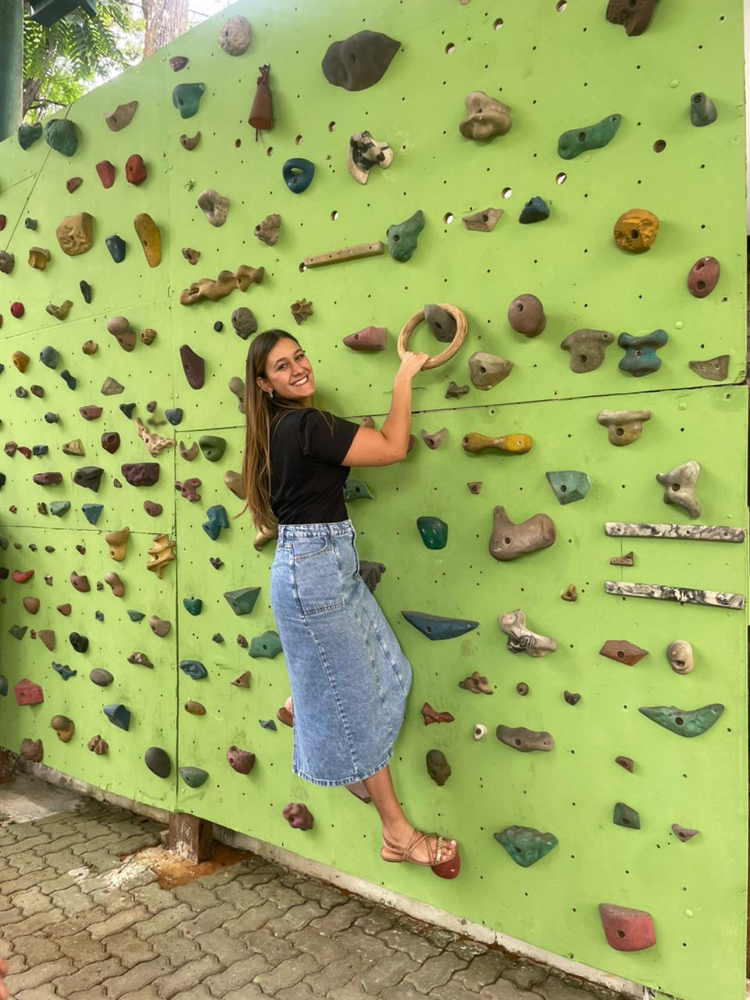

Se você chegou até aqui… 💌
É porque a sua felicidade e o seu jeito carinhosa são o motivo do meu amor por você.

Você é resposta das minhas orações, meu sorriso fácil e minha paz.
Meus deveres como seu namorado!!
Orar por você
Estar sempre com você, mesmo nos momentos difíceis
Ser compreensivo (mesmo estando estressado 🤣)
Consagrar a nossa vida e familia ao serviço do Senhor
Preparar seu café (mesmo que eu não goste 🤣)
Mimar a mulher que amo!
Voltar ao início ↩️
Sua vida que amo acompanhar!💌